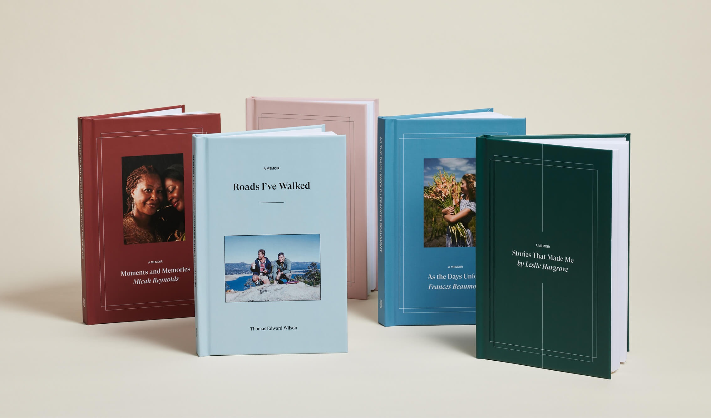

About this project

This project was inspired by StoryWorth. Storyworth is an American storytelling platform that sends weekly prompts to subscribers and compiles their responses into a printed book. I learned about this platform reading a story from The Power of Regret. below is the story of Abby.
...Or take Abby Henderson, a twenty-nine-year-old behavioral health researcher, who contributed to the World Regret Survey:
I regret not taking advantage of spending time with my grandparents as a child. I resented their presence in my home and their desire to connect with me, and now I’d do anything to get that time back.
Henderson grew up, the youngest of three siblings, in a happy home in Phoenix, Arizona. Her paternal grandparents lived in the small town of Hartford City, Indiana. Just about every winter, to escape the Midwest cold, they’d visit for a month or two, usually
staying in the Henderson house.
Young Abby was not into it. She was a quiet kid whose parents both worked, so she relished the time after school when she could hang out at home by herself. Her grandparents disturbed that peace. Her grandmother, waiting for her when she returned from classes, always wanted to hear about her day—and Abby resisted the attempts at connection.
Now she regrets it.
“The biggest regret is that I didn’t hear their stories,” she told me in an interview.
But that has altered her approach to her own parents. Sparked by this regret, she and her siblings bought their father, who’s in his seventies, a subscription to StoryWorth. Each week the service sends an email that contains a single question (What was your mother like? What is your fondest childhood memory? And—yes—what regrets do you have?). The recipient responds with a story. At the end of the year, those stories are compiled into a hardcover book. Because of the poke of If Only, she said, “I seek out more meaning. I seek out more connection. . . . I don’t want to feel the way when my parents die that I felt about my grandparents of ‘What did I miss?’
Excerpt From
The Power of Regret
Daniel H. Pink
This material may be protected by copyright.
Your answers will be compiled into a book at the end of the year. Just like Abby did by subscribing to StoryWorth!
답변들을 모아 연말에 책으로 만들겠다는 것임ㅋㅎ
Return to the Question